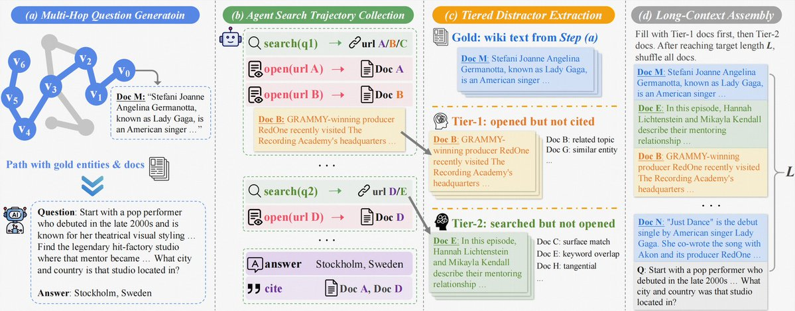

核心判断
LongTraceRL 真正有价值的 insight 是：长上下文推理训练不能只问“答案对不对”，也不能只把随机文档塞进上下文凑长度；训练信号必须迫使模型区分“看起来相关、甚至搜索 agent 曾经读过”的材料和真正支撑答案的证据链。
数据难度来自行为轨迹
Tier-1 distractor 是 search agent 打开并阅读、但最终没有引用的文档。它比随机负例更接近真实检索错误：模型不是被无关噪声干扰，而是被“合理但错误”的路径干扰。
奖励只区分正确答案内部质量
rubric reward 只在最终答案正确时生效。这样实体命中奖励不会鼓励模型乱列上下文里的实体，而是用于区分哪些正确答案真的覆盖了中间证据。
训练目标是证据接地，不是长输出
论文观察到 rubric 会拉长 reasoning；当输出撞上 32K response budget 时，positive-only 策略又会把策略拉回能给出最终答案的轨道。这说明长度本身不是目标，证据路径和可完成性才是目标。
问题背景：长上下文 RLVR 的两个旧短板
RLVR 在数学题里容易定义二值答案奖励，但长上下文问答多了两个麻烦：上下文里有大量干扰材料，且模型可能偶然猜对答案却走错证据路径。LongTraceRL 正是在这两个位置下注。
随机 distractor 太容易
很多长上下文训练集用随机文档或浅层检索扩展上下文。这样的负例往往和问题语义距离很远，模型学到的是快速过滤无关段落，而不是在强相似证据之间做细粒度判别。
outcome-only reward 太稀疏
如果只看最终答案，模型可以在中间引用错实体、漏掉关键桥接节点，甚至靠表面线索猜中结果。长上下文里的真正能力是跨段落定位、消歧、整合和保持证据链一致。
方法机制：把搜索失败痕迹变成训练难度
LongTraceRL 的数据管线可以拆成四步：先用知识图谱 random walk 合成深多跳问题，再让 search agent 真实尝试搜索，随后从搜索轨迹里抽取不同强度的干扰文档，最后组装成 128K 训练上下文。
1. KG random walk
从 KILT Wikipedia snapshot 的 hyperlink graph 出发，执行 8 步受控 random walk，得到实体路径 \(P=[v_0,v_1,\ldots,v_k]\)。论文还插入 mad walks，避免路径一直困在相近图区域。
2. 问题合成
LLM 基于实体路径和对应 Wikipedia 文本合成 multi-hop question，要求必须逐跳推理、不能靠关键词直搜、答案唯一，并输出 gold entities 作为后续 rubric。
3. 搜索轨迹采集
search agent 针对每个问题采样 5 条搜索轨迹，动作包括 search、open、cite。只有最终答对的轨迹被保留，避免把随机探索或幻觉路径当成训练证据。
4. tiered assembly
gold passages 先进入上下文，再优先填充 Tier-1；长度仍不够时加入 Tier-2，最后打乱文档顺序，防止模型依赖固定位置捷径。
Tier-1：高混淆负例
agent 打开并阅读过，但最终没有引用的文档。它们往往处在相似主题、相似实体或相似关系附近，是模型最容易误当证据的材料。
Tier-2：低混淆负例
出现在搜索结果中但 agent 没有打开的文档。它们提供更浅层的主题干扰，主要用于填充长上下文并保持检索场景的真实噪声。

奖励设计：实体 recall 只能奖励正确答案
LongTraceRL 的奖励由 answer correctness 和 rubric recall 组成。关键约束是 positive-only：只有最终答案正确时，gold entity 命中率才进入总奖励；答案错误时直接给 0。
rubric recall
检查回答中覆盖了多少 gold entities。它不是完整的因果证明，但能比 final answer 更细地检查模型是否走过关键证据节点。
group normalization
GRPO 每个问题采样一组答案，不同问题的 gold entity 数量和难度不同；论文按组内最大 raw rubric score 做归一，降低题间尺度差异。
positive-only
若错误答案也能拿实体分，模型会倾向于枚举上下文实体来抬高奖励。positive-only 把 rubric 限定为“正确答案里的质量排序器”。
实验结果：收益主要来自 hard distractor 与 rubric
论文在 AA-LCR、MRCR、FRAMES、LongBench v2 和 LongReason 五个 benchmark 上评估 4B、8B、30B 三个推理模型。最强证据不是单个 headline 分数，而是 ablation 能把两个关键组件拆开。
| Backbone | Base Avg | Best prior baseline | LongTraceRL-GRPO | LongTraceRL | 主要读法 |
|---|---|---|---|---|---|
| DeepSeek-R1-0528-Qwen3-8B | 42.7 | 40.9 | 42.9 | 43.8 | 提升较小，但 DocQA/LoongRL/LongRLVR 在这个 backbone 上都下降，说明数据/奖励适配比规模更关键。 |
| Qwen3-4B-Thinking-2507 | 53.3 | 56.5 | 53.7 | 59.0 | 主力证据。rubric ablation 从 59.0 掉到 53.7，说明收益主要不是“同一批长数据多训几步”。 |
| Qwen3-30B-A3B-Thinking-2507 | 60.5 | 63.3 | 62.3 | 63.7 | 大模型也有提升，但相对 DocQA/LoongRL 优势变小，说明更强 base 已经具备部分证据整合能力。 |
| Ablation | 关键数字 | 说明 |
|---|---|---|
| rubric weight \(\alpha\) | \(\alpha=0.3\) 平均 59.0；\(\alpha=0.1\) 为 58.3；\(\alpha=0.5\) 为 57.1。 | 过程奖励太弱不够，太强会稀释答案目标并诱导实体提及捷径。 |
| distractor strategy | random 55.7，search 56.7，traj-random 57.4，traj-tiered 59.0。 | 越接近真实搜索轨迹、越优先高混淆文档，下游分数越高。 |
| distractor overlap | Tier-1 macro overlap 63.23%，traj-tiered 总体 50.03%，random 仅 1.35%。 | 这个统计解释了为什么随机负例弱：它几乎不触碰 gold entity 附近的推理区域。 |
| positive-only | positive-only 平均 59.0；positive&negative 57.1。 | 错误答案也给 rubric 分会稀释真正解题梯度，尤其 AA-LCR 和 MRCR 掉得明显。 |
工程读法：这套 recipe 适合什么系统
LongTraceRL 可以被读作一条长上下文后训练 recipe：不要只保存最终答案轨迹，也要保存 search / open / cite 之间的中间失败痕迹，因为这些痕迹比随机负例更接近线上模型会犯的错。
适合 deep research / RAG 训练
真实系统里，agent 经常打开相关但最终不用的网页、PDF 或内部文档。把这些文档标成高混淆负例，可以训练模型不要把“曾经检索到”误当成“应该引用”。
适合可枚举证据节点的领域
法律条款、财报指标、论文实体链、代码符号引用、医学指南条目都可能形成 rubric item。只要中间证据节点可枚举，entity-level reward 就能变成低成本过程监督。
不适合纯主观或开放生成任务
若任务没有唯一答案、没有稳定中间实体、或证据路径本身多解，rubric recall 容易变成过窄 proxy。此时应换成 citation verifier、semantic coverage 或人工/模型审阅。
训练成本不低
官方 README 给出的完整 128K 训练需要 4 节点 x 8 GPU 级别资源，且 reward server 仍依赖 LLM-as-judge 判断答案正确性。它是高质量后训练 recipe，不是轻量 fine-tune 脚本。
边界与风险
LongTraceRL 的证据链比较完整，但它仍有几个边界需要明确，否则很容易把“百科多跳长上下文 QA 的收益”过度外推成“长上下文推理通用解”。
知识源集中在 Wikipedia
训练数据来自 KILT Wikipedia snapshot 和 KG random walk。论文报告显示可迁移到金融、法律、代码等 benchmark，但源数据单一仍会限制推理模式和文档风格多样性。
hard negative 依赖 agent 能力
搜索 agent 太弱会产生浅层或错误负例；太强又可能过滤掉许多有训练价值的半错误路径。不同 agent 会改变 Tier-1/Tier-2 的分布，复现时不能忽略这一点。
rubric entity 不是完整推理证明
命中实体不等于关系方向正确、数值计算正确或时序约束正确。案例中确实展示了更深阅读，但实体 recall 本质仍是 proxy reward。
公开数据是 LFS 文件
HF dataset card、API 和 viewer 确认有 2,815 行数据；直接 raw 读取 data.jsonl 会拿到 Git LFS pointer，需要通过 Hugging Face dataset download 或 datasets 库获取真实内容。
证据边界与资料索引
本笔记以 HuggingPapers 的 X 原帖作为入口，但技术判断主要基于 arXiv/Hugging Face 论文页、HF API、官方 GitHub README、公开模型/数据集 card、PDF 正文和本地化原帖配图。GitHub REST API 当前命中未认证 rate limit，因此仓库星标等动态元数据以 Hugging Face paper 页面和 raw README 为辅助，不作为核心结论。
核验命令摘录
opencli twitter thread "https://x.com/HuggingPapers/status/2061322399518216371" --limit 80 -f json
curl -sIL "https://t.co/8QMDb8az8P"
curl -sIL "https://t.co/whRQdE6vhe"
opencli web read --url "https://huggingface.co/papers/2605.31584" --stdout true --download-images false --wait 5 -f json
curl -s "https://huggingface.co/api/papers/2605.31584" | jq '.'
opencli arxiv paper "2605.31584" -f json
curl -sL "https://raw.githubusercontent.com/THU-KEG/LongTraceRL/main/README.md"
curl -s "https://huggingface.co/api/models?filter=arxiv:2605.31584&limit=50"
curl -s "https://huggingface.co/api/datasets?filter=arxiv:2605.31584&limit=50"